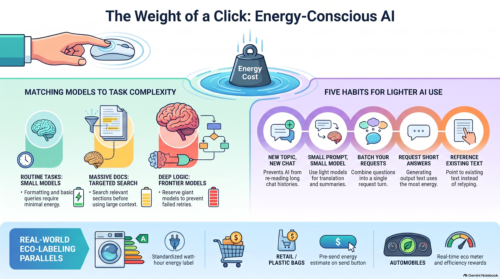
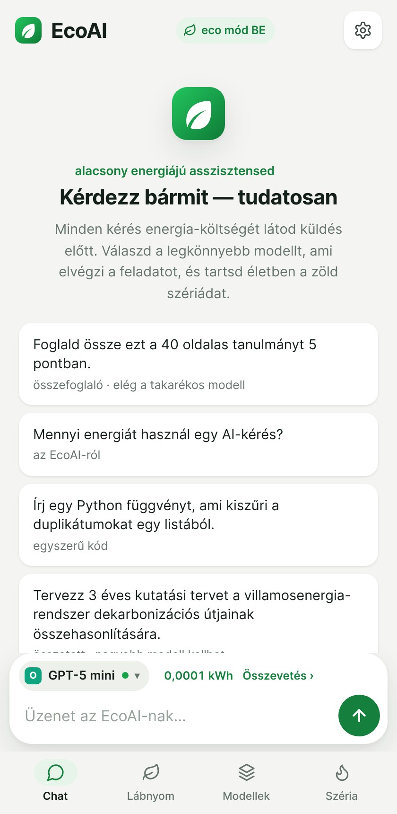
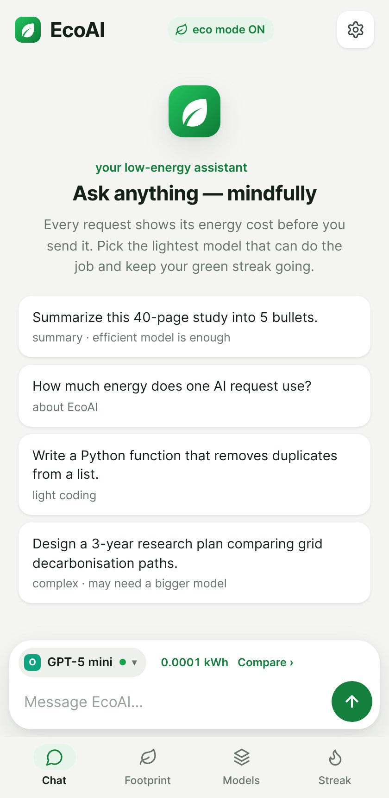

Egy kattintás súlya – az AI energiaköltségeThe weight of a click – energy-conscious AI
A láthatatlan pazarlás, a jobb felület, az energiacímke és a takarékos szokások egyetlen képen. Matching models to tasks, five habits for lighter AI use and real-world eco-labelling parallels in one picture.


EcoAI – próbáld ki a telefonodonEcoAI – try it on your phone
Telepíthető, offline is működő alkalmazás. Minden adat a készüléken marad. An installable app that works offline. All data stays on your device.
- Modellválasztó energia szerintEnergy-sorted model picker Becslés még küldés előtt, kérésenkénti kWh és CO₂.An estimate before you send, kWh and CO₂ per request.
- Saját lábnyomYour own footprint Heti trend és javaslatok, csendben, követés nélkül.Weekly trend and suggestions, quietly, with no tracking.
- Jutalom, nem szégyenítésRewards, not shaming Széria és jelvények a könnyebb választásért.Streaks and badges for the lighter choice.
A válaszok szimuláltak, az energiaadatok szemléltető becslések.Replies are simulated; energy figures are illustrative estimates.


Interaktív prototípusokInteractive prototypes
Kattints végig rajtuk: így nézhetne ki egy energiatudatos AI-felület.Click through them: this is what an energy-aware AI interface could look like.
Asztali wireframeDesktop wireframe
Márkás modellválasztó, élő idő-, költség- és energiabecslés, válasz meta-sáv, terelés, útválasztás és dashboard. Brand-aware model picker, live time-cost-energy estimates, response meta bar, nudges, routing and a dashboard.
MegnyitomOpenMobil app wireframeMobile app wireframe
Négy képernyő: csevegés modellválasztóval, lábnyom, modellek, széria és jelvények. Four screens: chat with model picker, footprint, models, and streak with badges.
MegnyitomOpenEco-feedback animációEco-feedback animation
A takarékos választás jutalma: gyűrű-mérő, energiaszámláló, levél-robbanás, széria. Három változat. A reward for the lighter choice: ring gauge, energy counter, leaf burst, streak. Three variants.
MegnyitomOpenÚtmutatók és háttérGuides and background
Melyik modell mire elég, hogyan kérdezz kevesebb körből, és miért kell új UX.Which model is enough for what, how to ask in fewer rounds, and why UX must change.
Túl a chatablakonBeyond the chatbox
Kiáltvány: hatékonysági mátrix és három UX-elv (token-mérő, szelíd terelés, Auto-Eco) vázlatokkal. Manifesto: an efficiency matrix and three UX principles (token meter, nudging, Auto-Eco) with sketches.
ElolvasomReadMelyik modellt használd?Which model should you use?
Feladat-alapú javaslatok példa-promptokkal, összehasonlító táblázat, öt szabály és gyakori tévhitek. Task-based picks with example prompts, a comparison table, five rules and common myths.
ElolvasomReadHogyan kezdj beleHow to get started
Öt kitölthető indító sablon másolás gombbal, hogy az AI kevesebb körből, kevesebb energiából dolgozzon. Five fill-in starter templates with a copy button, so AI gets it done in fewer rounds, with less energy.
ElolvasomReadA projekt történeteThe story of this project
Egy aggálytól a működő appig, és őszintén arról, hogyan lehetett volna kevesebb energiából. From a concern to a working app, and an honest look at how it could have taken less energy.
ElolvasomReadKampány: írd alá, oszd meg, mutasd beCampaign: sign, share, present
Egy ember egy szokást változtat. Egy közös szabvány milliók alapbeállítását.One person changes a habit. A shared standard changes the default for millions.
Előadások és médiaTalks & media
Videó, podcast, infografika, két diasor a bohinji Node AI Summitról, háttércikk és megosztókép. Video, podcast, infographic, two slide decks from the Node AI Summit in Bohinj, an article and share images.
MegnézemOpenPetícióPetition
Szabványos energiacímke minden modellhez, őszinte becslés küldés előtt, valódi modellválasztás. A standard energy label for every model, an honest pre-send estimate, a real model choice.
ElolvasomReadThe Weight of a Click
60 másodperces, szerkesztői stílusú interaktív kampányoldal az AI környezeti lábnyomáról. A 60-second editorial, interactive campaign page about AI's environmental footprint.
MegnyitomOpenPowering Intelligence
17 diás prezentáció a felelős AI-energiahasználatról, böngészőben lapozható. A 17-slide presentation on responsible AI energy use, ready to browse.
MegnyitomOpen